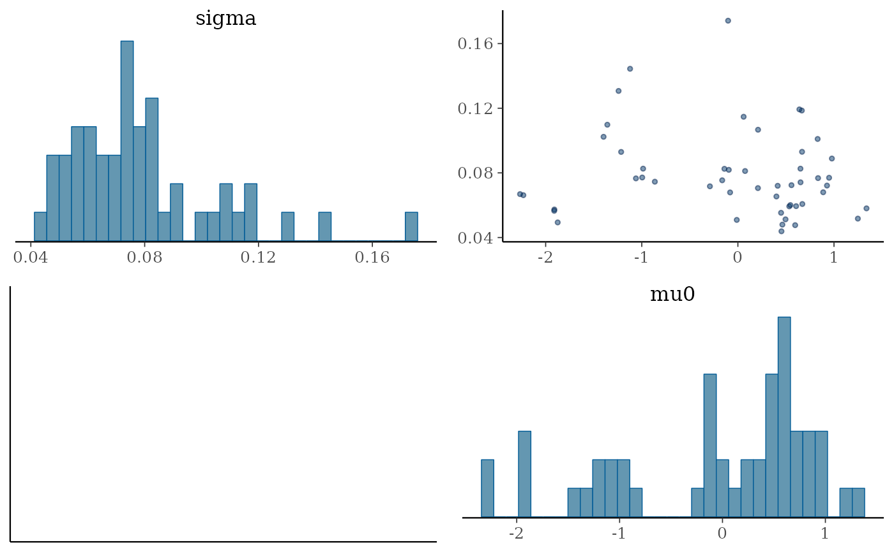

Samples from Bayesian model using input from data frame
est_naloxone(
d,
psi_vec = c(0.7, 0.2, 0.1),
max_delays = 3,
delay_alpha = 2,
delay_beta = 1,
run_estimation = TRUE,
rw_type = 1,
chains = 4,
iter = 2000,
seed = 42,
adapt_delta = 0.85,
...
)data frame with format
unique id for region
time in months
Kits ordered
Kits reported as used
Kits reported as distributed
Optional label for region
reporting delay distribution
maximum delay from kit ordered to kit distributed
shape parameter for order to distributed delay distribution
shape parameter for order to distributed delay distribution
if TRUE will sample from posterior otherwise will
sample from prior only
1 - random walk of order one. 2 - random walk of order 2.
A positive integer specifying the number of Markov chains. The default is 4.
A positive integer specifying the number of iterations for each chain (including warmup). The default is 2000.
Seed for random number generation
(double, between 0 and 1, defaults to 0.8)
other parameters to pass to rstan::sampling
Other inference:
est_naloxone_vec()
library(rstan)
#> Loading required package: StanHeaders
#> Loading required package: ggplot2
#> rstan (Version 2.21.8, GitRev: 2e1f913d3ca3)
#> For execution on a local, multicore CPU with excess RAM we recommend calling
#> options(mc.cores = parallel::detectCores()).
#> To avoid recompilation of unchanged Stan programs, we recommend calling
#> rstan_options(auto_write = TRUE)
library(bayesplot)
#> This is bayesplot version 1.10.0
#> - Online documentation and vignettes at mc-stan.org/bayesplot
#> - bayesplot theme set to bayesplot::theme_default()
#> * Does _not_ affect other ggplot2 plots
#> * See ?bayesplot_theme_set for details on theme setting
rstan_options(auto_write = TRUE)
options(mc.cores = parallel::detectCores(logical = FALSE))
d <- generate_model_data()
fit <- est_naloxone(d, iter = 100, chains = 1)
#> Warning: Specifying the `id_cols` argument by position was deprecated in tidyr 1.3.0.
#> ℹ Please explicitly name `id_cols`, like `id_cols = regions`.
#> ℹ The deprecated feature was likely used in the bennu package.
#> Please report the issue at <https://github.com/sempwn/bennu/issues>.
#>
#> SAMPLING FOR MODEL 'distribution_covariate_model' NOW (CHAIN 1).
#> Chain 1:
#> Chain 1: Gradient evaluation took 4e-05 seconds
#> Chain 1: 1000 transitions using 10 leapfrog steps per transition would take 0.4 seconds.
#> Chain 1: Adjust your expectations accordingly!
#> Chain 1:
#> Chain 1:
#> Chain 1: WARNING: There aren't enough warmup iterations to fit the
#> Chain 1: three stages of adaptation as currently configured.
#> Chain 1: Reducing each adaptation stage to 15%/75%/10% of
#> Chain 1: the given number of warmup iterations:
#> Chain 1: init_buffer = 7
#> Chain 1: adapt_window = 38
#> Chain 1: term_buffer = 5
#> Chain 1:
#> Chain 1: Iteration: 1 / 100 [ 1%] (Warmup)
#> Chain 1: Iteration: 10 / 100 [ 10%] (Warmup)
#> Chain 1: Iteration: 20 / 100 [ 20%] (Warmup)
#> Chain 1: Iteration: 30 / 100 [ 30%] (Warmup)
#> Chain 1: Iteration: 40 / 100 [ 40%] (Warmup)
#> Chain 1: Iteration: 50 / 100 [ 50%] (Warmup)
#> Chain 1: Iteration: 51 / 100 [ 51%] (Sampling)
#> Chain 1: Iteration: 60 / 100 [ 60%] (Sampling)
#> Chain 1: Iteration: 70 / 100 [ 70%] (Sampling)
#> Chain 1: Iteration: 80 / 100 [ 80%] (Sampling)
#> Chain 1: Iteration: 90 / 100 [ 90%] (Sampling)
#> Chain 1: Iteration: 100 / 100 [100%] (Sampling)
#> Chain 1:
#> Chain 1: Elapsed Time: 0.123358 seconds (Warm-up)
#> Chain 1: 0.102148 seconds (Sampling)
#> Chain 1: 0.225506 seconds (Total)
#> Chain 1:
#> Warning: There were 13 divergent transitions after warmup. See
#> https://mc-stan.org/misc/warnings.html#divergent-transitions-after-warmup
#> to find out why this is a problem and how to eliminate them.
#> Warning: Examine the pairs() plot to diagnose sampling problems
#> Warning: The largest R-hat is NA, indicating chains have not mixed.
#> Running the chains for more iterations may help. See
#> https://mc-stan.org/misc/warnings.html#r-hat
#> Warning: Bulk Effective Samples Size (ESS) is too low, indicating posterior means and medians may be unreliable.
#> Running the chains for more iterations may help. See
#> https://mc-stan.org/misc/warnings.html#bulk-ess
#> Warning: Tail Effective Samples Size (ESS) is too low, indicating posterior variances and tail quantiles may be unreliable.
#> Running the chains for more iterations may help. See
#> https://mc-stan.org/misc/warnings.html#tail-ess
mcmc_pairs(fit,
pars = c("sigma", "mu0"),
off_diag_args = list(size = 1, alpha = 0.5)
)
#> Warning: Only one chain in 'x'. This plot is more useful with multiple chains.
